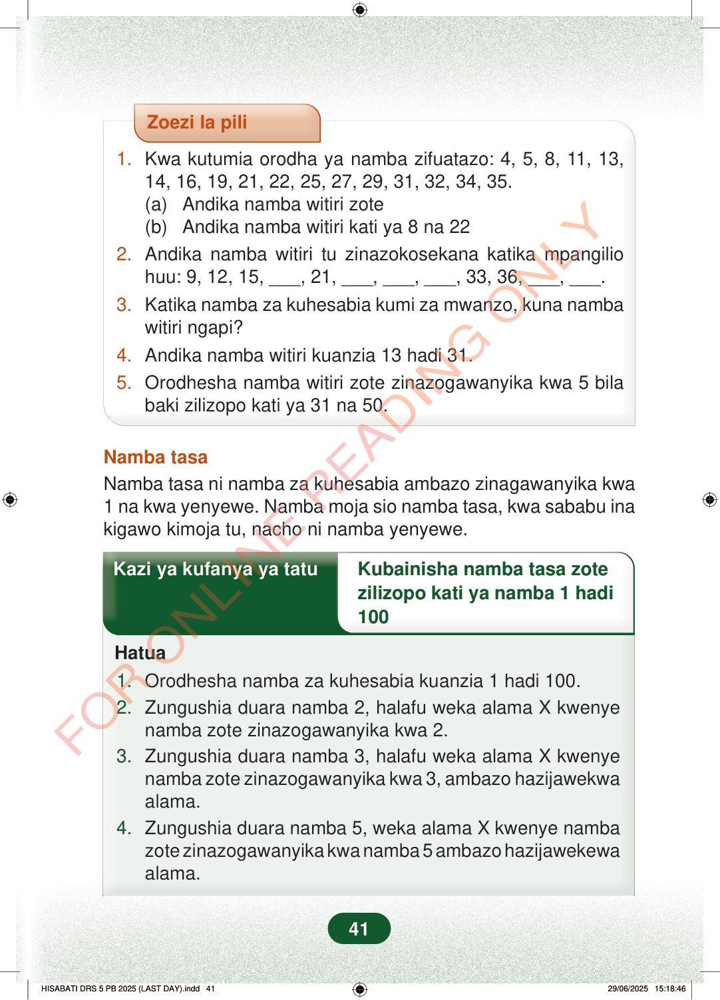

Zoezi la pili1.Kwa kutumia orodha ya namba zifuatazo: 4, 5, 8, 11, 13,14, 16, 19, 21, 22, 25, 27, 29, 31, 32, 34, 35.(a) Andika namba witiri zote(b) Andika namba witiri kati ya 8 na 222.Andika namba witiri tu zinazokosekana katika mpangiliohuu: 9, 12, 15, ___, 21, ___, ___, ___, 33, 36, ___, ___.3.Katika namba za kuhesabia kumi za mwanzo, kuna nambawitiri ngapi?4.Andika namba witiri kuanzia 13 hadi 31.5.Orodhesha namba witiri zote zinazogawanyika kwa 5 bilabaki zilizopo kati ya 31 na 50.Namba tasaNamba tasa ni namba za kuhesabia ambazo zinagawanyika kwa1 na kwa yenyewe. Namba moja sio namba tasa, kwa sababu inakigawo kimoja tu, nacho ni namba yenyewe.Kazi ya kufanya ya tatuKubainisha namba tasa zotezilizopo kati ya namba 1 hadi100Hatua1.Orodhesha namba za kuhesabia kuanzia 1 hadi 100.2.Zungushia duara namba 2, halafu weka alama X kwenyenamba zote zinazogawanyika kwa 2.3.Zungushia duara namba 3, halafu weka alama X kwenyenamba zote zinazogawanyika kwa 3, ambazo hazijawekwaalama.4.Zungushia duara namba 5, weka alama X kwenye nambazote zinazogawanyika kwa namba 5 ambazo hazijawekewaalama.41
Zoezi la pili
1. Kwa kutumia orodha ya namba zifuatazo: 4, 5, 8, 11, 13, 14, 16, 19, 21, 22, 25, 27, 29, 31, 32, 34, 35. (a) Andika namba witiri zote (b) Andika namba witiri kati ya 8 na 22 2. Andika namba witiri tu zinazokosekana katika mpangilio huu: 9, 12, 15, ___, 21, ___, ___, ___, 33, 36, ___, ___. 3. Katika namba za kuhesabia kumi za mwanzo, kuna namba witiri ngapi? 4. Andika namba witiri kuanzia 13 hadi 31. 5. Orodhesha namba witiri zote zinazogawanyika kwa 5 bila baki zilizopo kati ya 31 na 50.
Namba tasa Namba tasa ni namba za kuhesabia ambazo zinagawanyika kwa 1 na kwa yenyewe. Namba moja sio namba tasa, kwa sababu ina kigawo kimoja tu, nacho ni namba yenyewe.
Kazi ya kufanya ya tatu Kubainisha namba tasa zote
zilizopo kati ya namba 1 hadi 100
Hatua
1. Orodhesha namba za kuhesabia kuanzia 1 hadi 100. 2. Zungushia duara namba 2, halafu weka alama X kwenye namba zote zinazogawanyika kwa 2. 3. Zungushia duara namba 3, halafu weka alama X kwenye namba zote zinazogawanyika kwa 3, ambazo hazijawekwa alama. 4. Zungushia duara namba 5, weka alama X kwenye namba zote zinazogawanyika kwa namba 5 ambazo hazijawekewa alama.
41
Zoezi la pili1.Kwa kutumia orodha ya namba zifuatazo: 4, 5, 8, 11, 13, 14, 16, 19, 21, 22, 25, 27, 29, 31, 32, 34, 35.(a) Andika namba witiri zote(b) Andika namba witiri kati ya 8 na 222.Andika namba witiri tu zinazokosekana katika mpangilio huu: 9, 12, 15, [[blank:item-3]], 21, [[blank:item-4]], [[blank:item-5]], [[blank:item-6]], 33, 36, [[blank:item-7]], [[blank:item-8]].3.Katika namba za kuhesabia kumi za mwanzo, kuna namba witiri ngapi?4.Andika namba witiri kuanzia 13 hadi 31.5.Orodhesha namba witiri zote zinazogawanyika kwa 5 bila baki zilizopo kati ya 31 na 50.Namba tasaNamba tasa ni namba za kuhesabia ambazo zinagawanyika kwa 1 na kwa yenyewe.Namba moja sio namba tasa, kwa sababu ina kigawo kimoja tu, nacho ni namba yenyewe.Kazi ya kufanya ya tatuKubainisha namba tasa zote zilizopo kati ya namba 1 hadi 100Hatua1.Orodhesha namba za kuhesabia kuanzia 1 hadi 100.2.Zungushia duara namba 2, halafu weka alama X kwenye namba zote zinazogawanyika kwa 2.3.Zungushia duara namba 3, halafu weka alama X kwenye namba zote zinazogawanyika kwa 3, ambazo hazijawekwa alama.4.Zungushia duara namba 5, weka alama X kwenye namba zote zinazogawanyika kwa namba 5 ambazo hazijawekewa alama.